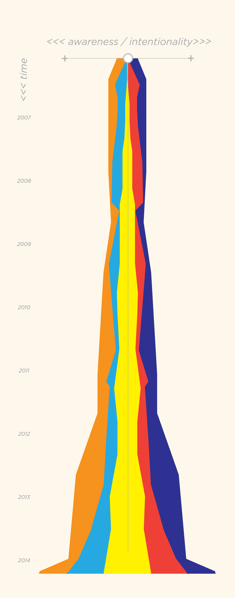

Archive.org
Archive.org TV News Archive
Sunk Investment
Valentines to an Architect
Solar Nexus
Architecture for Humanity Advocacy
Architecture for Humanity Promotions
play time
>>>>>>>>>>>>>>>>>>>>
CONTEXTUALIZE
<<<<<<<<<<<<<<<<<<<

As seen in: